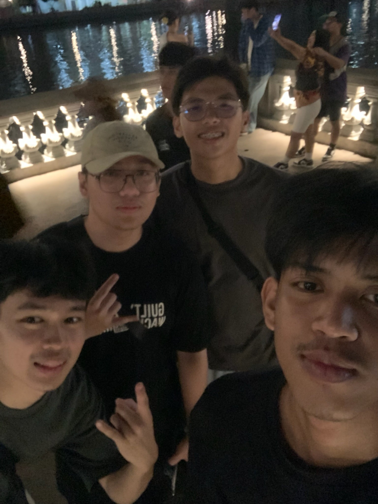
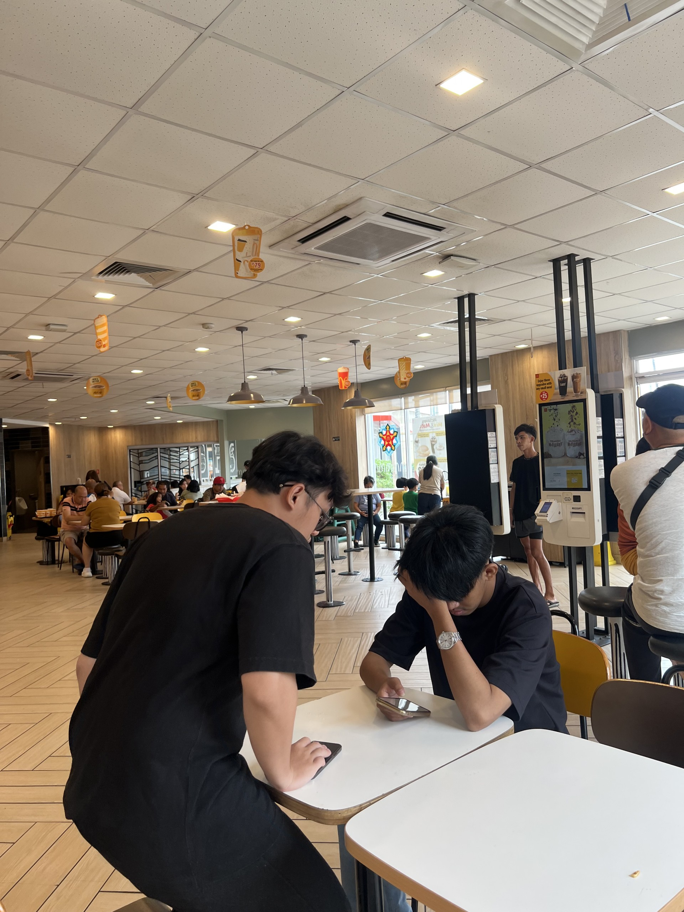
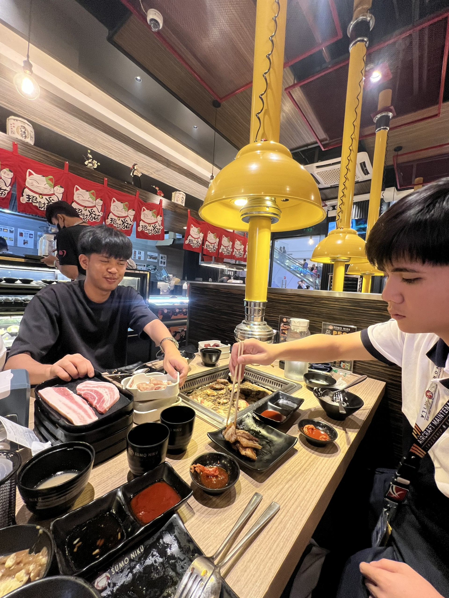

Friends since Junior Highschool
Their Nickname: ["Poc"]
My Nickname to them: ["Zo"]
Brithday: [March 2004]
Color: [Green]
Food: [Birriani]
Movie: [Kung Fu Panda]
Song: [Alam mo ba girl - Hev Abi]
Hobby: [Play Billiards]
We first met in 2017 at our school from junior high. I remember he first approached me to ask questions about what section I belong to on grade 7.
Over time, we've been hanging out together because we play basketball every adter class. Some of our best memories include being disciplined by the guidance of our school .
Looking forward to many more years and memories together!
  